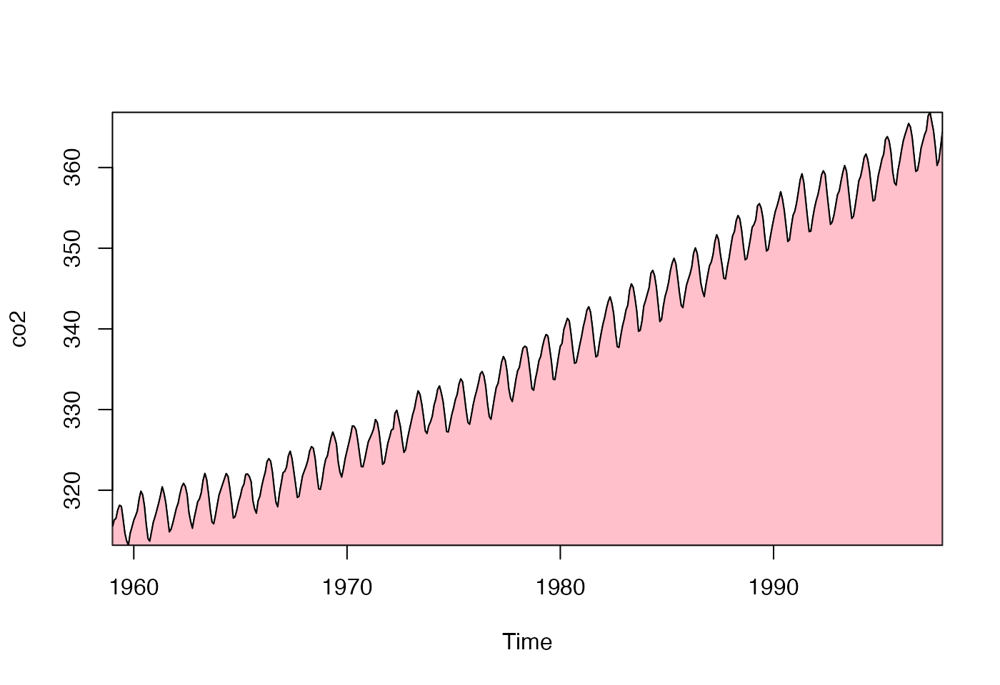
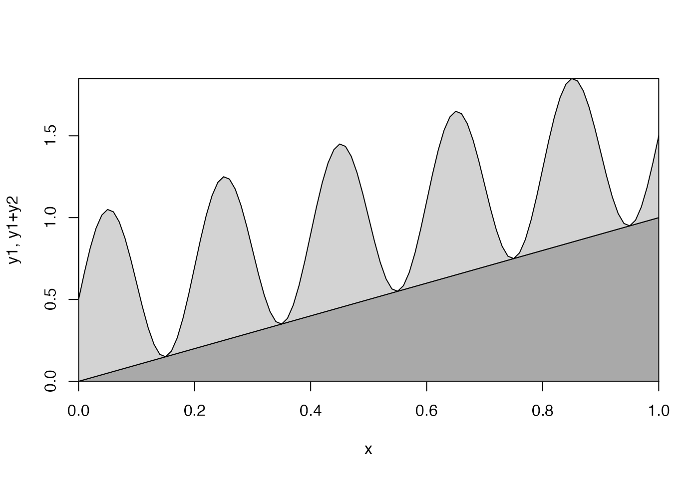

This adds to an existing plot by filling the area between the
lower=lower(x) and upper=upper(x) curves. In most cases, as
shown in “Examples”, it is helpful
to use xaxs="i" in the preceding plot call, so that the
polygon reaches to the edge of the plot area.
Arguments
- x
Coordinate along horizontal axis
- lower
Coordinates of the lower curve, of same length as
x, or a single value that gets repeated to the length ofx.- upper
Coordinates of the upper curve, or a single value that gets repeated to the length of
x.- ...
passed to
polygon(). In most cases, this will containcol, the fill colour, and possiblyborder, the border colour, although cross-hatching withdensityandangleis also a good choice.
Examples
# 1. CO2 record
plot(co2, xaxs = "i", yaxs = "i")
fillplot(time(co2), min(co2), co2, col = "pink")

# 2. stack (summed y) plot
x <- seq(0, 1, 0.01)
lower <- x
upper <- 0.5 * (1 + sin(2 * pi * x / 0.2))
plot(range(x), range(lower, lower + upper),
type = "n",
xlab = "x", ylab = "y1, y1+y2",
xaxs = "i", yaxs = "i"
)
fillplot(x, min(lower), lower, col = "darkgray")
fillplot(x, lower, lower + upper, col = "lightgray")
